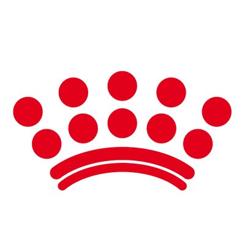

 Royal Canin Background | ||
| Home | ||
|
Home Products About Us contacts Links |
about usThe company was established by the French veterinary surgeon Jean Cathary in 1968. He had a veterinary practice in a village in the Gard region of France and was concerned many people’s pets were being presented with a variety of health problems, especially skin and coat conditions. Convinced the cause was dietary, Cathary devised a cereal–based recipe, which he prepared in an oven in his garage.The diet successfully alleviated the problems pets were presented with, so in 1968, Cathary registered the food with the trademark “Royal Canin”. He closed his veterinary practice to concentrate on manufacturing and distributing the feed. An extruder was imported from the U.S. and Royal Canin became the first manufacturer of dry pet food in France and the first European company to use an extruder. The target market was primarily breeders and German Shepherd associations; television advertising was used to promote the product, something which was not being undertaken by competitors. |
|
| Copyright © 2018 | ||